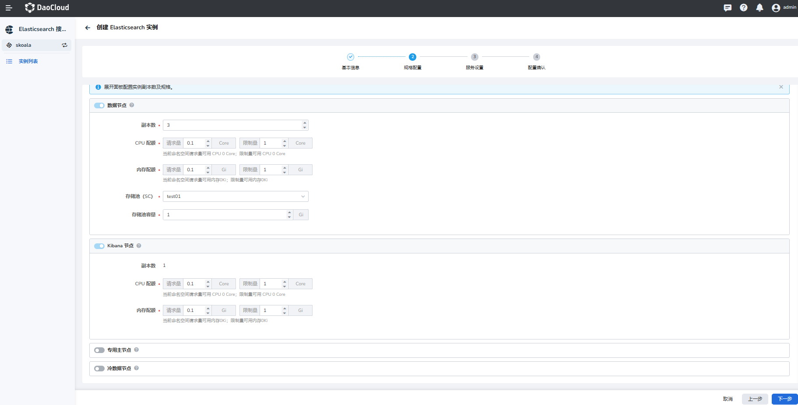

集群规格和容量规划¶
前言¶
当您准备创建 Elasticsearch 实例时，建议提前评估集群所需的资源。一般情况下需要评估所需磁盘容量、集群规格、存储的文件类型、大小和数量等。基于这些资源评估，预先规划合适的 Elasticsearch 集群配置，可以减少后续使用过程中的问题和风险。
重要知识: ES 集群的物理磁盘容量 不等于 ES 集群可使用数据空间大小
本文基于实际测试结果和用户使用经验，提供了相对通用的评估方法。但业务是瞬息万变的，所以本文的目的是在您创建 Elasticsearch 时给出一个相对合适的建议。实际上 DCE 5 也提供了优化集群规格和容量规划的能力，方便后续对资源进行升级。
事先评估项¶
要进行 Elasticsearch 的容量规划，需要考虑以下因素：
- 使用场景：主要使用的业务场景，不同场景下产生的数据量不同
- 文档数量：确定要存储的文档数量，以及每个文档的大小
- 存储需求：确定所需的存储空间，以便存储所有文档以及任何相关数据
- 索引需求：选择适当的索引策略和设置以确保性能和可扩展性
- 查询需求：确定查询负载的复杂性和大小，以便为其分配足够的资源
- 集群规模：确定集群的大小和数量，以便支持预期的负载并提供高可用性和容错性
存储容量规划¶
基础要求规划¶
在存储容量规划的开始时，需要预先确认两个 使用场景 和 数据要求 规划：
-
使用场景
- 日志场景
- 搜索场景
- 数据分析场景
- 数据库加速场景
- 通用场景
-
数据要求
- 源数据大小或者预估文档条数和单个文档的大小
- 每日数据增量情况
- 数据保留时长
- 需要的副本数
ES 其他业务开销¶
Elasticsearch 中除了数据之外，还有其他的开销，这些也是影响 Elasticsearch 服务存储容量的主要原因，如：
- 索引开销：可以使用 cat/indices?v API 和 __pri.store.size_ 值计算确切的开销计算，通常比源数据大 10%（ ___all__ 参数等未计算）
- 操作系统预留空间：默认操作系统会保留5%的文件系统供您处理关键流程、系统恢复以及防止磁盘碎片化问题等
- Elasticsearch 内部开销：段合并、日志等内部操作，一般预留 20%
- 副本数量： 副本有利于增加数据的可靠性，但同时会增加存储成本
- 安全阈值： 为了预防突发的数据增长，请大致保留 15% 的容量空间作为安全阈值
所以，为了数据的安全和稳定，我们建议您的磁盘使用率不要超过 85% ；或者在即将达到 85%，应该尽快扩充升级。
快速计算公式¶
| 完整公式 | 简化版本 |
|---|---|
| 源数据 * (1 + 副本数量) * ( 1 + 索引开销) / (1 - Linux 预留空间) / （1 - 内部开销） = 最小存储要求 | 源数据 * （1 + 副本数量）* 1.45 = 最小存储要求 |
如果有 500G 数据存储并且需要一个副本，则最低存储要求更接近 500 * 2 * 1.1 / 0.95 / 0.8 = 1.5T 。
关于节点磁盘的配置¶
使用场景不同，单节点最大承载数据量也会不同，具体如下：
- 数据加速、查询聚合等场景：单节点磁盘最大容量 = 单节点内存大小（GB）* 10
- 日志写入、离线分析等场景：单节点磁盘最大容量 = 单节点内存大小（GB）* 50
- 通用场景：单节点磁盘最大容量 = 单节点内存大小（GB）* 30
ES 集群实例配置推荐¶
在生产环境部署推荐配置：尽量一个节点只承担一个角色。不同节点所需要的计算资源不一样。不同角色分离后，可以按需扩展互不影响。
- 集群最大节点数 = 单节点 CPU * 5
-
单节点磁盘最大容量
- 搜索类场景：单节点磁盘最大容量 = 单节点内存大小（GB）* 10。
- 日志类等场景：单节点磁盘最大容量 = 单节点内存大小（GB）* 50。
| 配置 | 最大节点数 | 单节点磁盘最大容量 (查询) | 单节点磁盘最大容量 (日志) |
|---|---|---|---|
| 4 核 16G | 20 | 160 GB | 800 GB |
| 8 核 32G | 40 | 320 GB | 1.5 TB |
| 16 核 64G | 80 | 640 GB | 2 TB |
分片数量规划¶
适用场景：
- 日志类，写入频繁，查询较少，单个分片 30G 左右
- 搜索类，写入少，查询频繁，单个分片不超过 20G
每个 Elasticsearch 索引被分为多个分片，数据按哈希算法打散到不同的分片中。由于索引分片的数量影响读写性能和故障恢复速度，建议提前规划。
分片使用概要¶
- Elasticsearch 在 7.x 版本中，每个索引默认为 1 个主分片 和 1 个副本分片
- 在单节点上，7.x 版本最大分片数量为 1000
-
单个分片大小尽量保持在 10-50G 之间为最佳体验，一般推荐在 30G 左右
- 分片过大可能使 Elasticsearch 的故障恢复速度变慢
- 分片过小可能导致非常多的分片，因为每个分片会使用占用一些 CPU 和内存，从而导致读写性能和内存不足的问题。
-
当分片数量超过数据节点数量时，建议分片数量接近数据节点的整数倍，便于将分片均匀的分布到数据节点中。
- 对日志场景，建议启用 ILM 功能。在发现分片大小不合理时，通过该功能及时调整分片数量。
索引分片资源占用¶
每个索引和每个分片都需要一些内存和 CPU 资源。在大多数情况下，一小组大分片比许多小分片使用更少的资源。
段在分片的资源使用中起着重要作用。大多数分片包含几个段，用于存储其索引数据。 Elasticsearch 将段元数据保存在 JVM 堆内存中，以便可以快速检索它以进行搜索。 随着分片的增长，它的段被合并成更少、更大的段。这减少了段的数量，这意味着更少的元数据保存在堆内存中。
为了减少索引数量并避免造成过大且无序的映射，可以考虑在同一索引中存储类似结构的数据，而不要基于数据来源将数据分到不同的索引中。 很重要的一点是在索引/分片的数量和每个单独索引的映射大小之间实现良好平衡。 由于集群状态会加载到每个节点（包括主节点）上的堆内存中，而且堆内存大小与索引数量以及单个索引和分片中的字段数成正比关系，所以还需要同时监测主节点上的堆内存使用量并确保其大小适宜，这一点很重要。
分片过小会导致段过小，进而致使开销增加。您要尽量将分片的平均大小控制在至少几 GB 到几十 GB 之间。 对时序型数据用例而言，分片大小通常介于 20GB 至 40GB 之间。
由于单个分片的开销取决于段数量和段大小，所以通过 forcemerge 操作强制将较小的段合并为较大的段能够减少开销并改善查询性能。 理想状况下，应当在索引内再无数据写入时完成此操作。请注意：这是一个极其耗费资源的操作，所以应该在非高峰时段进行。
每个节点上可以存储的分片数量与可用的堆内存大小成正比关系，但是 Elasticsearch 并未强制规定固定限值。 这里有一个很好的经验法则：确保对于节点上已配置的每个 GB，将分片数量保持在 20 以下。 如果某个节点拥有 30GB 的堆内存，那其最多可有 600 个分片，但是在此限值范围内，您设置的分片数量越少，效果就越好。 一般而言，这可以帮助集群保持良好的运行状态。
更多信息，请参考：
分片计算公式¶
(元数据 + 增长空间) * (1 + 索引开销) / 所需的分片大小 = 主分片的大约数量
假设有 80GiB 的数据。希望将每个分片保持在 30GiB 左右。因此，您的分片数量应大约为 80 * 1.1 / 30 = 3
如何管理分片¶
进入到 Kibana 的索引管理界面，找到 Stack Managment
使用索引生命周期管理（ILM）自动管理索引，管理策略如下：
- 根据索引大小，自动 rollover
- 根据索引创建时间，自动 rollover
- 根据文档数量，自动 rollover
索引生命周期执行策略，默认每 10 分钟执行一次，可以通过修改 indices.lifecycle.poll_interval 参数来控制检查频率。
数据服务内创建 Elasticsearch¶
中间件 elasticsearch 创建的页面

节点介绍： - 数据节点： Data Node 是 Elasticsearch 用于存储数据的节点，负责存储数据，用于存储大量数据，所以对存储的压力非常高 - Kibana 节点： 启用对应 Kibana 控制台， 为 Elasticsearch 提供了界面化的管理窗口 - 专用主节点： 专用节点（Dedicated Node）是一种配置选项，该选项指定节点只用于执行特定任务。与数据节点（Data Node）不同，专用节点不存储任何数据，而是专门用于执行集群管理或搜索操作
如上图中的，存储容量配置，请根据上述的容量计算公式，规划对应的存储容量。 是否启用专用主节点，主要考虑是否需要专用主节点来支持增强集群的稳定性。
结语¶
如果你有关于 Elasticsearch 如何进行容量规划的需求，可在页面底部进行讨论。